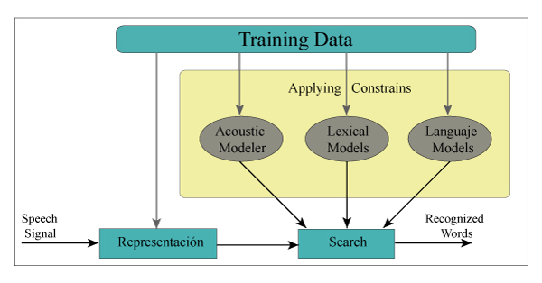
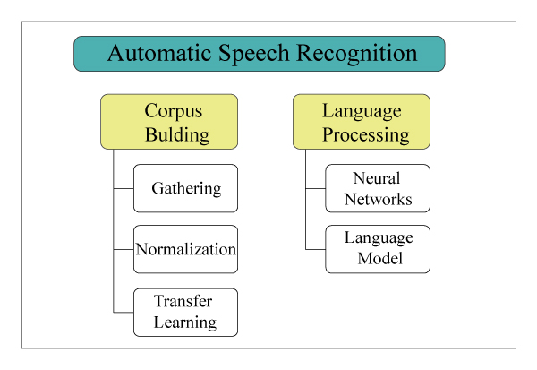

QILLQAQ
El paradigma vigente, modelo oculto de Markov ha generado herramientas comerciales (Google Voice, Amazon Echo, Cortana o Siri) con un impresionante nivel sin alcanzar la perfección pero sí un nivel operativo. Sin embargo el modelo oculto de Markov prácticamente alcanzó el techo y cualquier nuevo avance será solamente incremental. Debe recordarse que las herramientas comerciales mencionadas solamente están disponibles para aproximadamente cincuenta idiomas. Si se apuesta por esta tecnología quizás podría alcanzarse para el idioma quechua el nivel actual, operativo pero imperfecto, de sistemas ASR en otros idiomas, sin embargo se correría el riesgo que el producto desarrollado rápidamente quede desfasado y caduco.

Se descubrió que existe una tendencia creciente a utilizar modelos basados en redes neuronales; la curva de aprendizaje toma más tiempo pero es claro que en el largo plazo esta es la mejor opción.
Pasos para la creación de un ASR:
El sistema de reconocimiento de voz que transcribe directamente los datos de audio con texto, sin necesidad de una representación fonética intermedia se basa en una combinación de “deep bidirectional LSTM recurrent neural network architecture” y “Connectionist Temporal Classification objective function”
